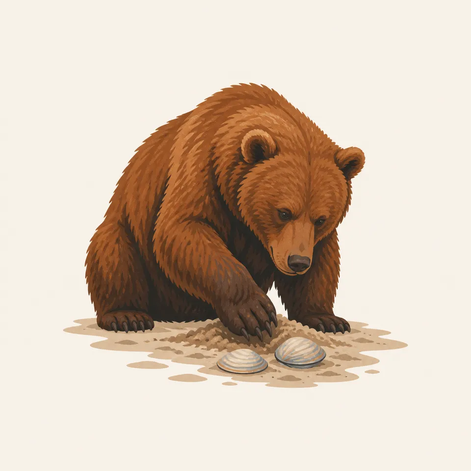
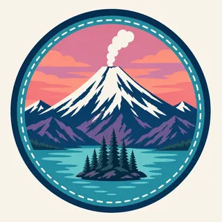

01
Redoubt and Iliamna
Two active volcanoes in the Chigmit and Neacola Mountains. Redoubt, the taller at 10,197 feet, has erupted four times since 1902, most recently in 2009.
TrailMark Archive Edition
Alaska | Chigmit Mountains
A monument on December 1, 1978, for the volcanoes, the lake, and the coast between them. A national park and preserve on December 2, 1980.
Archive No. TM-LACL-049
National Park since 1980
Collection Chigmit Mountains
Park Overview
President Jimmy Carter proclaimed Lake Clark National Monument on December 1, 1978. ANILCA made it a national park and preserve on December 2, 1980.
The park's own statistics page gives 4,030,006 acres total, split into 2,619,713 acres of national park and 1,410,293 acres of national preserve, with 2.61 million acres added to the National Wilderness Preservation System in 1980.
Two active volcanoes anchor the park: Mount Redoubt at 10,197 feet, the highest point in the park, and Mount Iliamna at 10,016 feet. Redoubt has erupted four times on record: 1902, 1966, 1989, and 2009.
Emotional Thesis
The header painting sets a snow-covered volcano venting steam over a turquoise lake at dusk, spruce-covered islands holding the foreground. Lake Clark itself is the largest lake by volume in the National Park Service, and its color in person is close to what the painting shows.
This is not a quiet park. Active volcanism and retreating glaciers, NPS says, continue to shape the peaks, moraines, and river systems here, the same forces that built the coastline visible from the water.
Landscape Highlights
01
Two active volcanoes in the Chigmit and Neacola Mountains. Redoubt, the taller at 10,197 feet, has erupted four times since 1902, most recently in 2009.
02
Sitting at 254 feet elevation with a maximum depth of 870 feet, it is the largest lake by volume anywhere in the National Park Service.
03
A 130-mile stretch of Cook Inlet coastline that NPS calls unrivaled brown bear habitat, where bears forage the tideflats for clams.
Wildlife
Bear viewing along the Cook Inlet coast draws visitors to what NPS calls unrivaled brown bear habitat. The extra drawing, a brown bear working two clams out of the sand, is the archive's image of that coast, not a census.

01
Estuaries along the coast support high numbers of bears and other wildlife, concentrated where the tideflats meet the forest.
02
The sockeye run through the Kvichak watershed is one of the reasons this coast supports the bear population it does; the two facts are connected, not separate.
03
Volcanic terrain and dense brush make much of the park's interior demanding travel; most wildlife viewing concentrates on the coast.
Geology
Redoubt and Iliamna are both active, part of the Pacific Ring of Fire. NPS describes active volcanism and retreating glaciers as forces still shaping the park's peaks, moraines, and river systems.
01
Redoubt's four recorded eruptions, 1902, 1966, 1989, and 2009, make it the more active of the park's two named volcanoes.
02
Perennial snow and glacial ice cover about 1,250 square miles, roughly 20 percent of the park, by the park's own statistics.
03
Lake Clark's basin, at 870 feet of maximum depth, was shaped by the same glacial and volcanic history as the mountains around it.
Peak season for bear viewing on the coast and for salmon running the Kvichak watershed toward Lake Clark.
Salmon runs continue to taper and bears feed heavily before winter. Weather on the coast turns less predictable.
Access is limited and conditions are severe around the volcanoes and the lake. Confirm current status with NPS before planning a visit.
Snow still covers much of the high terrain around Redoubt and Iliamna as the lower coast begins to open.
Photography
A snow-covered peak alone could be almost any Alaska mountain. Lake Clark's turquoise water beneath it is the specific, place-naming detail.
01
Lake Clark's color at the right light is close to what the header painting shows; keeping water in frame with a volcano places the image.
02
A bear working the tideflats for clams is a real, photographed Cook Inlet behavior. NPS distance guidance applies to every shot.
03
Katmai's ash-and-river valley is a different picture. This park's subject is the volcano-over-lake pairing, not a post-eruption landscape.
Field Notes
The mountain steams and the lake stays glass-still under it, two different kinds of unrest side by side.
TrailMark Field Notes

Badge Story
The badge fails if the water reads as ordinary blue. Lake Clark's particular turquoise, under a snow volcano, is the picture to hold.
Warm sunset sky against cool turquoise water.
A visible steam plume, not just a snow cone. Redoubt and Iliamna are both active.
No brown bear needed on the mark itself; that animal carries the wildlife section instead.
Archive No.049
LocationChigmit Mountains
ReleaseVolcano Lake Mark
Stewardship / Safety
Hunting is allowed in the preserve portion under state and federal regulation, not in the park portion. Redoubt and Iliamna are monitored active volcanoes, not dormant scenery.
Know whether you are in the park or the preserve; hunting and other rules differ between them.
Give bears working the coastal tideflats space; this is described as unrivaled habitat, not a viewing platform.
Volcanic activity is monitored by the Alaska Volcano Observatory; check current status before travel near Redoubt or Iliamna.
Proenneke's cabin is a historic structure. Visit it as the preserved site it is, not a stop to alter or take from.
Current conditions, fees, and alerts are on the National Park Service site.
Continue the Archive
Katmai's story is a single massive 1912 eruption; Lake Clark's is two volcanoes still capable of one. Denali is the roaded, single-mountain Alaska park; this one, like Kenai Fjords in this batch, has none at all.